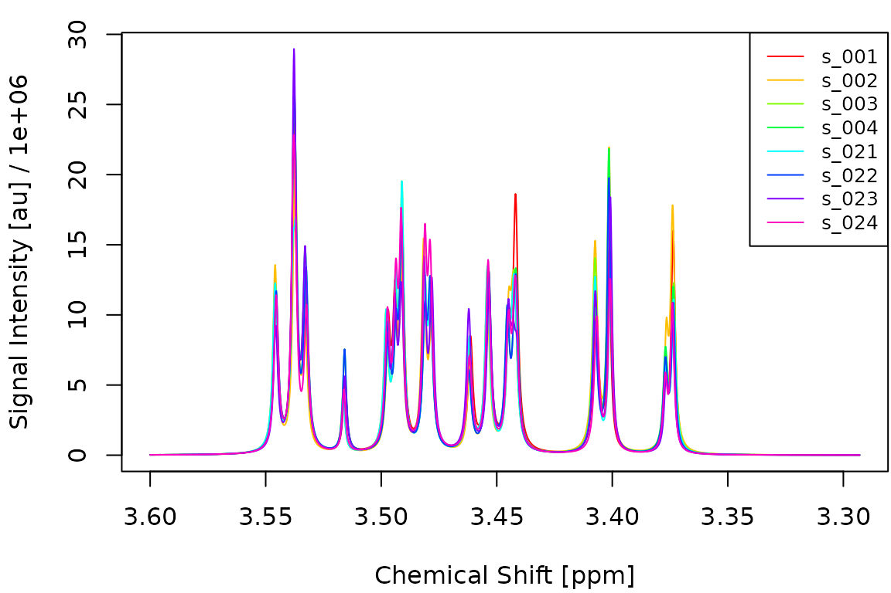
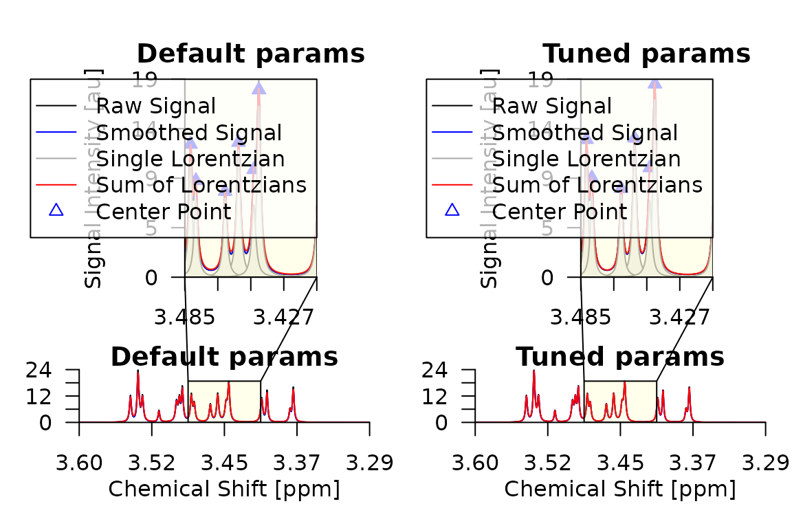

This article demonstrates how to use fit_mdm(),
cv_mdm() and benchmark_mdm() to build, tune
and evaluate classification models on deconvoluted NMR spectra. We
simulate a toy dataset with known group differences, split it into
training and test sets, run a small grid search to find good
preprocessing parameters, and then evaluate on held-out data.
Simulate spectra
We start by defining shared peak parameters for 40 spectra. Every spectrum has 20 peaks with slightly varying positions, half-widths and areas between samples. Five of these peaks carry subtle group information: their areas differ by +/- 5% between groups A and B.
library(metabodecon)
set.seed(42)
n <- 40
npk <- 20
cs_range <- seq(from = 3.6, length.out = 2048, by = -0.00015)
# Base peak parameters (shared across all spectra)
base_x0 <- sort(runif(npk, 3.35, 3.55))
base_A <- runif(npk, 5, 15) * 1e3
base_lam <- runif(npk, 0.9, 1.3) / 1e3
# Assign group labels
group <- factor(rep(c("A", "B"), each = n / 2))
# Discriminating peak indices
diff_AB <- 1:5 # peaks with slightly different areas between groups
spectra <- vector("list", n)
for (i in seq_len(n)) {
x0 <- base_x0 + rnorm(npk, sd = 0.0003)
A <- base_A * runif(npk, 0.7, 1.3)
lam <- base_lam * runif(npk, 0.9, 1.1)
# Group-specific area shift (+/- 5%)
if (group[i] == "A") {
A[diff_AB] <- A[diff_AB] * 1.05
} else {
A[diff_AB] <- A[diff_AB] * 0.95
}
spectra[[i]] <- simulate_spectrum(
name = sprintf("s_%03d", i), cs = cs_range,
x0 = sort(x0), A = A, lambda = lam,
noise = rnorm(length(cs_range), sd = 2000)
)
}
class(spectra) <- "spectra"
names(group) <- get_names(spectra)The following figure shows four spectra from each group overlaid on top of each other. The subtle area differences are hard to spot visually.
idx_A <- which(group == "A")[1:4]
idx_B <- which(group == "B")[1:4]
plot_spectra(spectra[c(idx_A, idx_B)])
Fit a single model
fit_mdm() deconvolutes the spectra, aligns them, builds
a feature matrix and fits a lasso model via cv.glmnet().
Here we use the default deconvolution parameters:
mdm_default <- fit_mdm(
spectra_tr, y_tr,
nfit = 3, smit = 2, smws = 5, delta = 6.4, npmax = 0,
maxShift = 100, maxCombine = 30, verbosity = 0
)
print(mdm_default)## metabodecon model (mdm)
## npmax: 0
## nfit: 3
## smit: 2
## smws: 5
## delta: 6.4
## maxShift: 100
## maxCombine: 30
## combineMethod: 2Tune preprocessing via grid search
cv_mdm() evaluates a grid of preprocessing parameter
combinations. For each configuration it builds the feature matrix, runs
cv.glmnet() with a fixed fold assignment, and records the
held-out accuracy and AUC at lambda.min. We use a
deliberately small grid here to keep vignette build time short:
pgrid <- expand.grid(
smit = 2,
smws = c(3, 5),
delta = c(4, 6),
nfit = 5,
npmax = 0,
maxShift = 100,
maxCombine = 30,
stringsAsFactors = FALSE
)
pgrid$acc <- NA_real_
pgrid$auc <- NA_real_
mdm_tuned <- cv_mdm(
spectra_tr, y_tr,
pgrid = pgrid,
nfolds = 5,
verbosity = 0
)The performance grid shows how each parameter combination scored:
pg <- mdm_tuned$pgrid
pg <- pg[order(-pg$auc), ]
knitr::kable(
head(pg, 10),
digits = c(0, 0, 0, 0, 0, 0, 0, 3, 4),
row.names = FALSE,
caption = "Top 10 parameter combinations by AUC."
)| smit | smws | delta | nfit | npmax | maxShift | maxCombine | acc | auc |
|---|---|---|---|---|---|---|---|---|
| 2 | 3 | 6 | 5 | 0 | 100 | 30 | 0.815 | 0.7944 |
| 2 | 3 | 4 | 5 | 0 | 100 | 30 | 0.815 | 0.7778 |
| 2 | 5 | 4 | 5 | 0 | 100 | 30 | 0.556 | 0.6333 |
| 2 | 5 | 6 | 5 | 0 | 100 | 30 | 0.556 | 0.6333 |
Compare deconvolution results
Let us compare the deconvolution of the first training spectrum using the default parameters and the best parameters found by the grid search:
# Deconvolute first two training spectra with default and tuned parameters
pair <- spectra_tr[1:2]
class(pair) <- "spectra"
d_default <- deconvolute(
pair, nfit = 3, smopts = c(2, 5), delta = 4, npmax = 0, verbose = FALSE
)
m <- mdm_tuned$meta
d_tuned <- deconvolute(
pair, nfit = m$nfit, smopts = c(m$smit, m$smws),
delta = m$delta, npmax = m$npmax, verbose = FALSE
)
par(mfrow = c(1, 2), mar = c(4, 4, 2, 1))
plot_spectrum(d_default[[1]], main = "Default params")
plot_spectrum(d_tuned[[1]], main = "Tuned params")
Inspect lasso features
The non-zero coefficients of the lasso model reveal which chemical shift positions are most important for distinguishing the two groups:
cf <- coef(mdm_tuned)
cf_nz <- cf[cf[, 1] != 0, , drop = FALSE]
knitr::kable(
data.frame(
feature = rownames(cf_nz),
coefficient = round(cf_nz[, 1], 4)
),
row.names = FALSE,
caption = "Non-zero lasso coefficients at lambda.min."
)| feature | coefficient |
|---|---|
| (Intercept) | 69.1303 |
| 3.5331 | 0.0002 |
| 3.4941 | -0.0005 |
| 3.4812 | -0.0002 |
| 3.4452 | -0.0001 |
| 3.4422 | -0.0001 |
| 3.4071 | -0.0003 |
| 3.40065 | -0.0004 |
| 3.3774 | -0.0004 |
| 3.3735 | -0.0002 |
Predict test samples
We use predict.mdm() to classify the held-out test
spectra. This internally deconvolutes and aligns them against the
reference spectrum stored in the model:
preds <- predict(mdm_tuned, spectra_te, type = "all", verbosity = 0)## 2026-04-10 07:16:17.52 Deconvoluting 13 spectra with 1 nworkers
## 2026-04-10 07:16:17.63 Aligning spectra with 1 nworkers
## 2026-04-10 07:16:17.70 Predicting with s=lambda.min
results <- data.frame(
sample = get_names(spectra_te),
true = y_te,
predicted = preds$class,
prob_B = round(preds$prob, 3)
)
acc <- mean(preds$class == y_te)
auc <- metabodecon:::AUC(y_te, preds$prob)
cat(sprintf("Test accuracy: %.1f%%\n", acc * 100))## Test accuracy: 76.9%## Test AUC: 0.7750
knitr::kable(
table(True = y_te, Predicted = preds$class),
caption = "Confusion matrix on test set."
)| A | B | |
|---|---|---|
| A | 6 | 2 |
| B | 1 | 4 |
Benchmark with nested cross-validation
To obtain an unbiased estimate of end-to-end predictive performance,
benchmark_mdm() wraps cv_mdm() in an outer
cross-validation loop. The outer held-out fold is never seen during
preprocessing or model fitting, so the resulting accuracy and AUC are
honest estimates.
A typical call looks like this:
bm <- benchmark_mdm(
spectra_tr, y_tr,
pgrid = pgrid,
nfo = 3, # 3 outer folds
nfl = 5, # 5 inner folds for cv.glmnet
nwo = 3, # 1 outer worker per fold
nwi = 4 # 4 inner workers for deconvolution
)
# bm$predictions contains per-sample held-out predictions
# bm$models contains the cv_mdm model for each outer fold
cat(sprintf(
"Nested CV accuracy: %.1f%%\n",
mean(bm$predictions$true == bm$predictions$pred) * 100
))Note that benchmark_mdm() is computationally expensive
because it runs the full grid search for each outer fold. We recommend
running it on a machine with enough RAM and CPU cores to use at least as
many outer workers (nwo) as outer folds (nfo).
It is therefore not executed in this vignette.